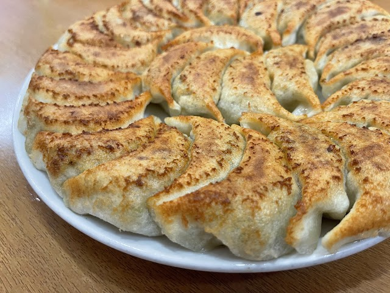
| 営業時間 | 月・木・金 16:30〜21:30 ／ 土・日 11:40〜17:00 |
|---|---|
| 定休日 | 火・水曜 |
| 住所 | 福島県福島市仲間町１−２４ |
| 予約 | 要確認 — ☎ 024-521-3787 ／ 公式サイト |
| 営業時間 | 月・火・木・金・土・日 17:00〜21:00 |
|---|---|
| 定休日 | 水曜 |
| 住所 | 福島県福島市飯坂町錦町１−２１ |
| 予約 | 可 — ☎ 024-542-4447 ／ 公式サイト |
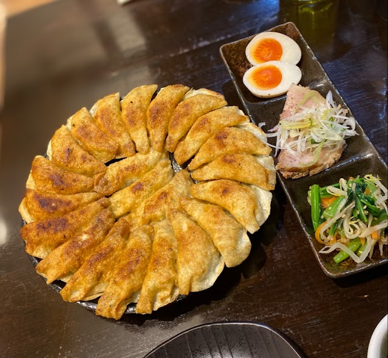
| 営業時間 | 月・水・木・金・土・日 11:30〜14:15, 17:00〜19:00 |
|---|---|
| 定休日 | 火曜 |
| 住所 | 福島県福島市栄町１−１ JR福島駅東口 1F |
| 予約 | 要確認 — ☎ 024-523-0188 ／ 公式サイト |
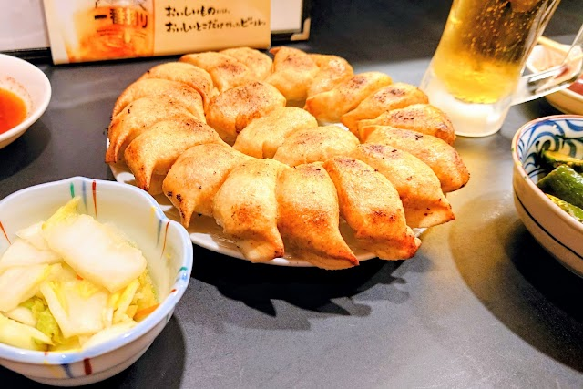
| 営業時間 | 月・火・水・木・金 17:30〜21:30 ／ 土 17:00〜21:30 |
|---|---|
| 定休日 | 日曜 |
| 住所 | 福島県福島市早稲町５−２３ 餃子山女 |
| 予約 | 可 — ☎ 024-523-1772 ／ 公式サイト |
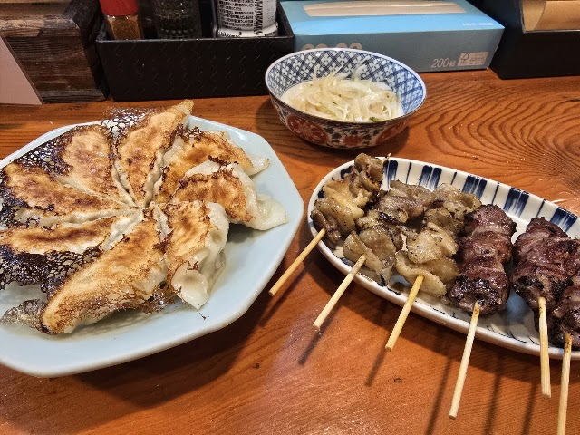
| 営業時間 | 月・火・水・木・金 17:00〜21:00 |
|---|---|
| 定休日 | 土・日曜 |
| 住所 | 福島県福島市霞町８−３３ |
| 予約 | 可 — ☎ 024-534-0749 |
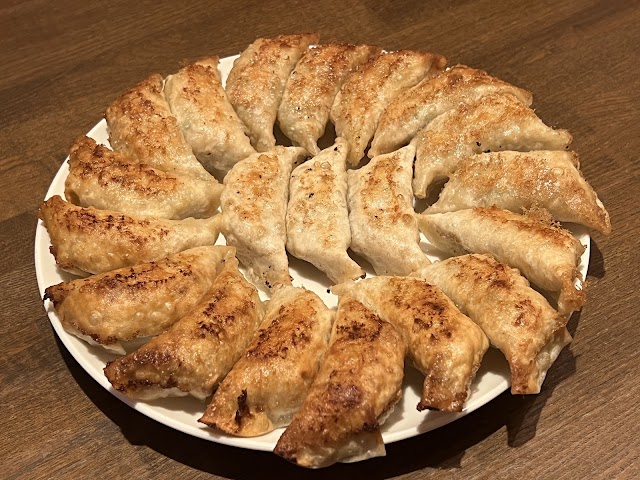
| 営業時間 | 月・火・水・木・金・土 17:30〜23:30 |
|---|---|
| 定休日 | 日曜 |
| 住所 | 福島県福島市置賜町５−１９ 2F |
| 予約 | 可 — ☎ 024-522-8744 ／ 公式サイト |
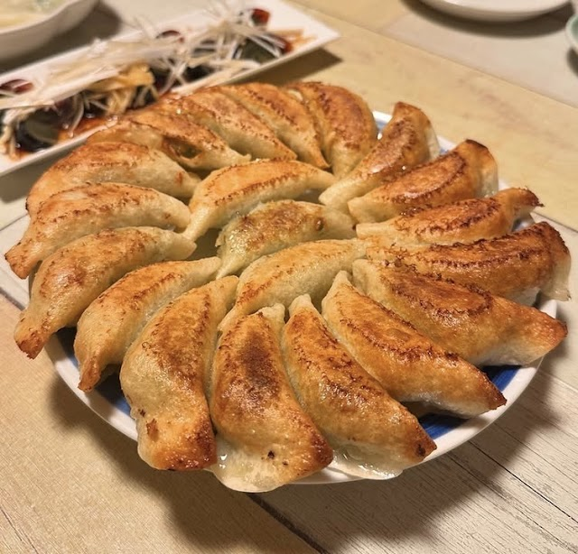
| 営業時間 | 月・火・水・木・金・土 17:30〜21:30 |
|---|---|
| 定休日 | 日曜 |
| 住所 | 福島県福島市置賜町４−２７ 大野屋ビル1104 |
| 予約 | 可 — ☎ 024-522-1104 ／ 公式サイト |
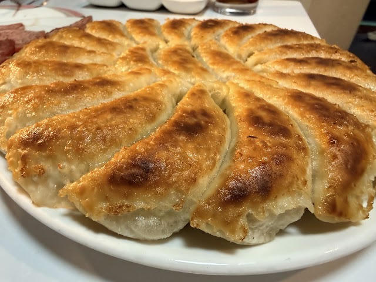
| 営業時間 | 月・火・水・木・金・土 17:00〜23:00 ／ 日 17:00〜22:00 |
|---|---|
| 定休日 | なし(要最終確認) |
| 住所 | 福島県福島市飯坂町鯖湖町７−７ |
| 予約 | 可 — ☎ 024-542-3505 ／ 公式サイト |
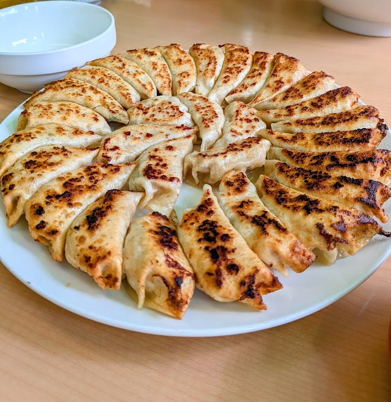
| 営業時間 | 火・水・木・金・日 11:00〜14:00 ／ 土 11:00〜14:00, 17:30〜20:00 |
|---|---|
| 定休日 | 月曜 |
| 住所 | 福島県福島市大町９−３０ |
| 予約 | 要確認 — ☎ 024-521-8123 ／ 公式サイト |
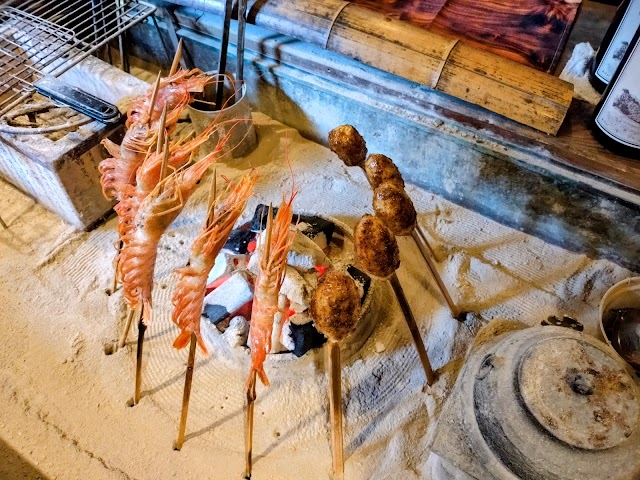
| 営業時間 | 月・火・水・木・金・土 17:00〜21:00 |
|---|---|
| 定休日 | 日曜 |
| 住所 | 福島県福島市三河南町２１−６ いろり庵 |
| 予約 | 可 — ☎ 050-5486-0623 ／ 公式サイト |
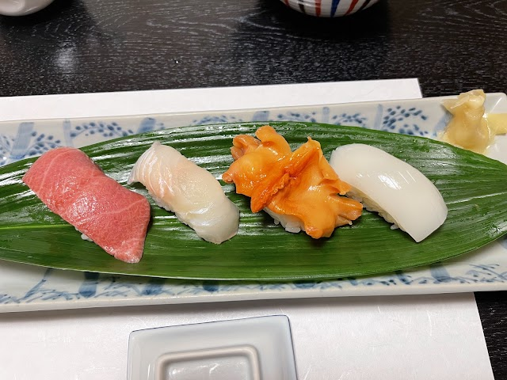
| 営業時間 | 火・水・木・金・土・日 11:30〜14:00, 17:00〜21:00 |
|---|---|
| 定休日 | 月曜 |
| 住所 | 福島県福島市太田町２５−１２ |
| 予約 | 可 — ☎ 024-533-7261 ／ 公式サイト |
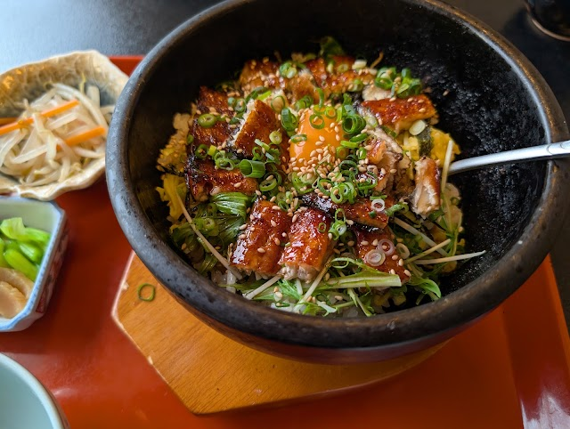
| 営業時間 | 火・水・木・金・土・日 11:30〜14:00, 16:30〜20:00 |
|---|---|
| 定休日 | 月曜 |
| 住所 | 福島県福島市新町３−２２ |
| 予約 | 可 — ☎ 024-522-4239 ／ 公式サイト |
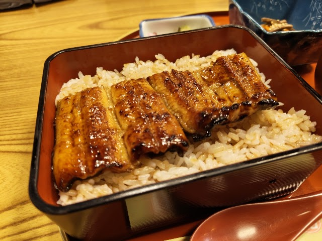
| 営業時間 | 月・火・水・木・金・土・日 11:00〜15:00, 17:00〜21:00 |
|---|---|
| 定休日 | なし(要最終確認) |
| 住所 | 福島県福島市御山三本松１４−１ |
| 予約 | 可 — ☎ 024-535-3730 ／ 公式サイト |
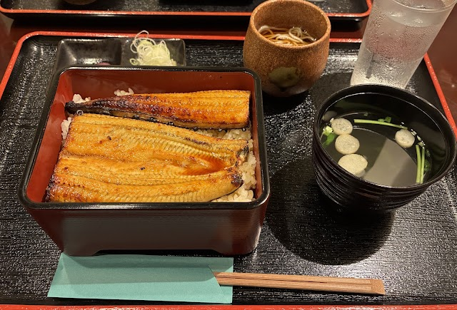
| 営業時間 | 月・火・水・木・金・土・日 11:00〜14:30 |
|---|---|
| 定休日 | なし(要最終確認) |
| 住所 | 福島県福島市置賜町８−２７ |
| 予約 | 可 — ☎ 070-9170-3223 ／ 公式サイト |
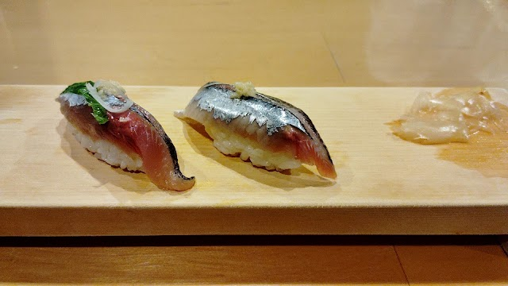
| 営業時間 | 月・火・水・木・金・土 16:30〜22:00 |
|---|---|
| 定休日 | 日曜 |
| 住所 | 福島県福島市陣場町９−３８ |
| 予約 | 可 — ☎ 024-572-5568 |
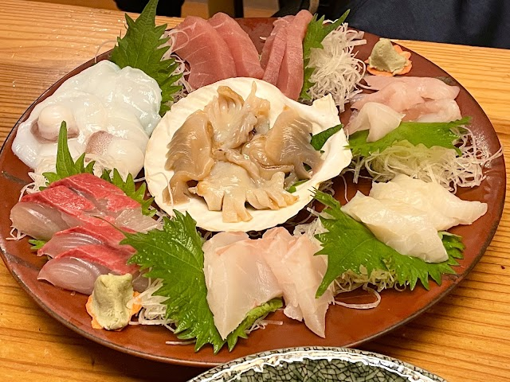
| 営業時間 | 月・火・水・木・金・土 17:00〜22:00 |
|---|---|
| 定休日 | 日曜 |
| 住所 | 福島県福島市陣場町２−１６ |
| 予約 | 可 — ☎ 024-522-5317 ／ 公式サイト |
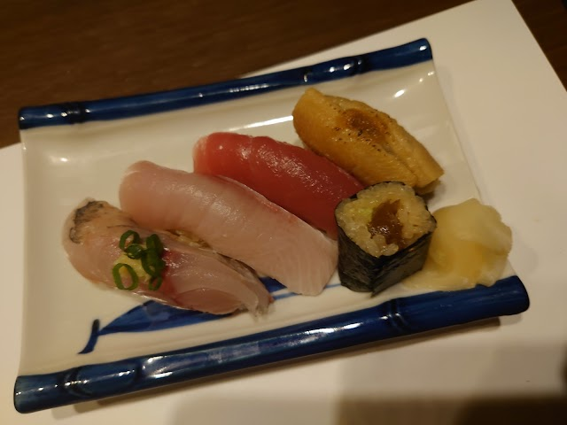
| 営業時間 | 月・火・水・木・金・土 17:00〜23:00 |
|---|---|
| 定休日 | 日曜 |
| 住所 | 福島県福島市置賜町８−19第1 1F |
| 予約 | 可 — ☎ 024-573-2885 |
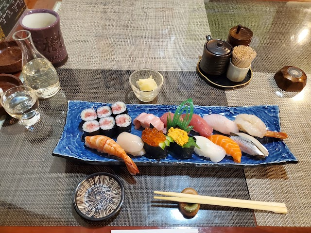
| 営業時間 | 月・火・水・木・金 17:00〜22:00 ／ 土 17:00〜0:00 |
|---|---|
| 定休日 | 日曜 |
| 住所 | 福島県福島市飯坂町東堀切１１−２１ 紫樹 |
| 予約 | 可 — ☎ 024-542-8800 |
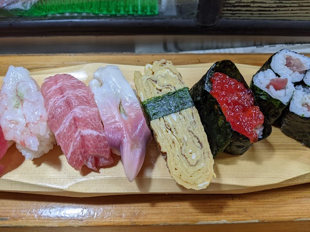
| 営業時間 | 水・木・金・土・日 11:30〜22:00 |
|---|---|
| 定休日 | 月・火曜 |
| 住所 | 福島県福島市上町２−９ 助六寿し |
| 予約 | 可 — ☎ 024-522-8534 |
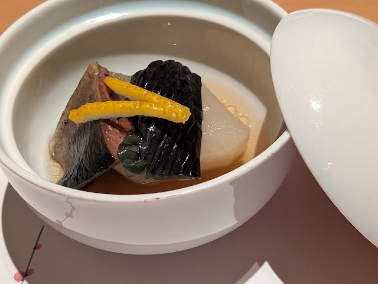
| 営業時間 | 月・火・水・木・金・土・日 17:30〜22:30 |
|---|---|
| 定休日 | なし(要最終確認) |
| 住所 | 福島県福島市栄町７丁目６ |
| 予約 | 可 — ☎ 024-522-3374 ／ 公式サイト |
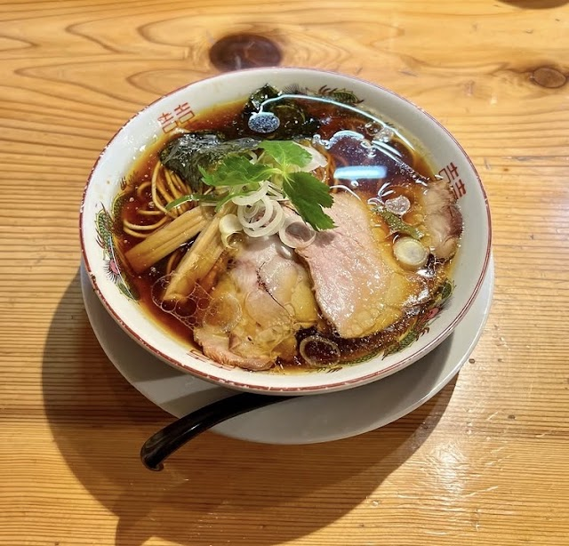
| 営業時間 | 月・火・木・金・土・日 11:00〜14:30, 17:30〜20:00 |
|---|---|
| 定休日 | 水曜 |
| 住所 | 福島県福島市新町３−１４ 上州ビル |
| 予約 | 要確認 — ☎ 024-572-3383 ／ 公式サイト |
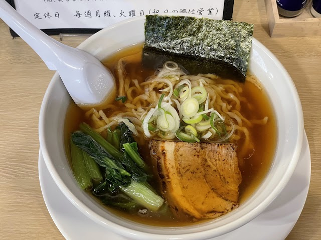
| 営業時間 | 水・木・日 8:00〜10:00, 11:30〜15:00 ／ 金・土 8:00〜10:00, 11:30〜15:00, 17:30〜21:00 |
|---|---|
| 定休日 | 月・火曜 |
| 住所 | 福島県福島市仲間町１−１９ アクシス仲間町 |
| 予約 | 要確認 — ☎ 070-1218-1909 ／ 公式サイト |
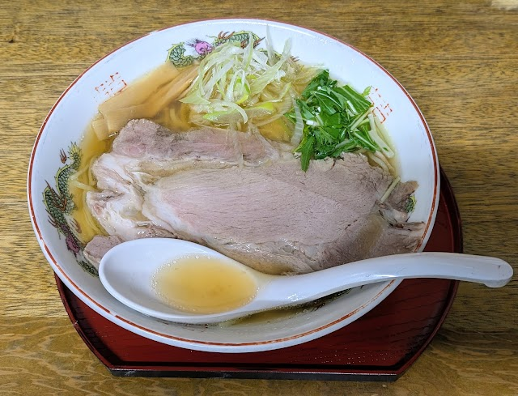
| 営業時間 | 火・水・木・金 7:30〜13:00 ／ 土 10:00〜13:00 |
|---|---|
| 定休日 | 月・日曜 |
| 住所 | 福島県福島市早稲町５−３ |
| 予約 | 要確認 — 公式サイト |
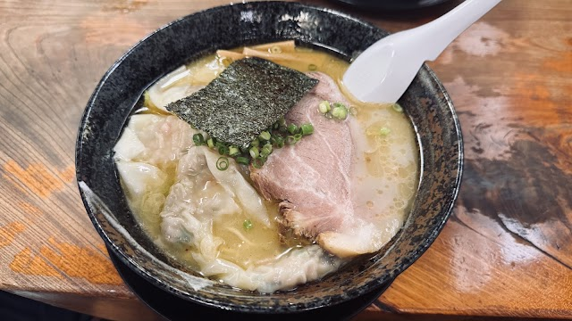
| 営業時間 | 月・火・木・金・土・日 11:00〜14:30 |
|---|---|
| 定休日 | 水曜 |
| 住所 | 福島県福島市南沢又下番匠田２２−２２ |
| 予約 | 要確認 |
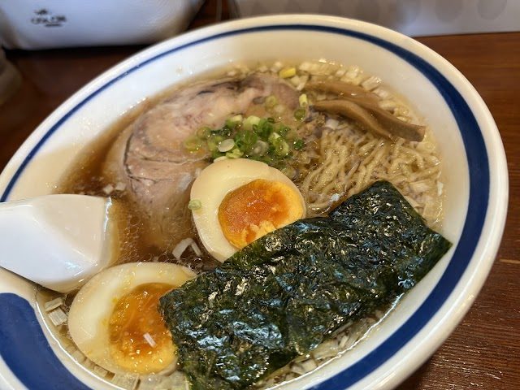
| 営業時間 | 月・木・金・土・日 11:00〜14:30, 17:00〜20:00 |
|---|---|
| 定休日 | 火・水曜 |
| 住所 | 福島県福島市笹谷稲場３７−２ パルメディオ |
| 予約 | 要確認 — ☎ 024-559-3272 ／ 公式サイト |
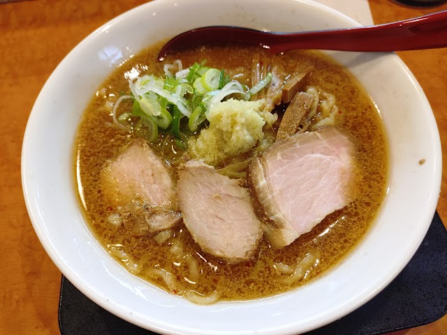
| 営業時間 | 月・水・木・金・土・日 11:00〜14:30 |
|---|---|
| 定休日 | 火曜 |
| 住所 | 福島県福島市置賜町８−３７ |
| 予約 | 要確認 — ☎ 024-597-7887 |
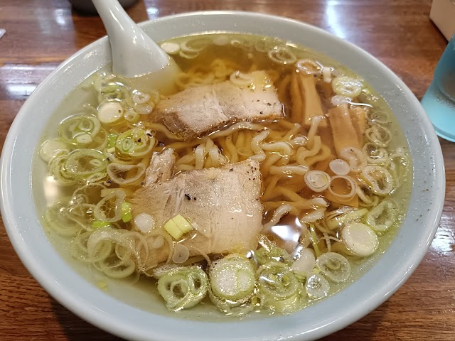
| 営業時間 | 月・火・水・木・金・土 10:00〜22:00 |
|---|---|
| 定休日 | 日曜 |
| 住所 | 福島県福島市栄町１２−１ |
| 予約 | 要確認 — ☎ 024-524-2888 ／ 公式サイト |
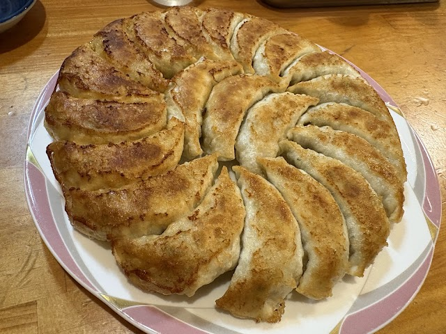
| 営業時間 | 月・木・金・土・日 17:00〜21:00 |
|---|---|
| 定休日 | 火・水曜 |
| 住所 | 福島県福島市飯坂町小滝１４ |
| 予約 | 要確認 — ☎ 024-542-5958 ／ 公式サイト |
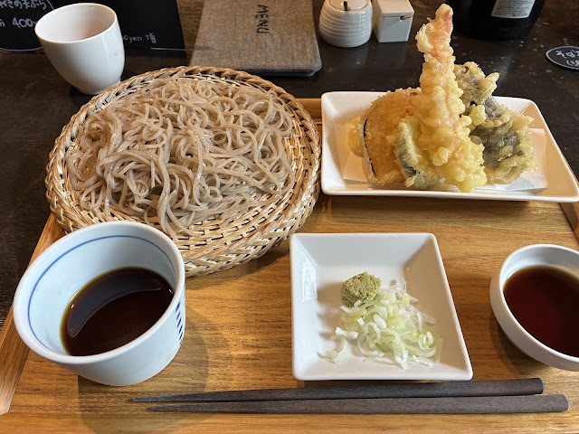
| 営業時間 | 11:00〜15:00(そばがなくなり次第終了) |
|---|---|
| 定休日 | 不定休 |
| 住所 | 福島県福島市置賜町８−３ アオイビル 1F |
| 予約 | 要確認 — ☎ 090-2975-6021 ／ 公式サイト |
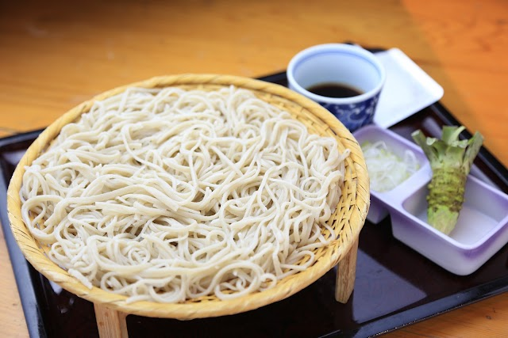
| 営業時間 | 火・水・木・金・土・日 11:00〜14:30, 17:30〜20:30 |
|---|---|
| 定休日 | 月曜 |
| 住所 | 福島県福島市南矢野目道下３０−１１ |
| 予約 | 可 — ☎ 024-555-0807 ／ 公式サイト |
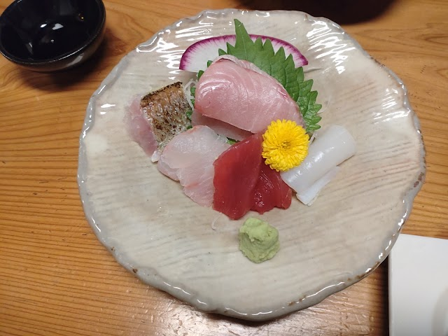
| 営業時間 | 月・火・水・木・金・土 18:00〜23:00 |
|---|---|
| 定休日 | 日曜 |
| 住所 | 福島県福島市置賜町６−９ 清水屋ビル 2F |
| 予約 | 可 — ☎ 024-523-5444 ／ 公式サイト |
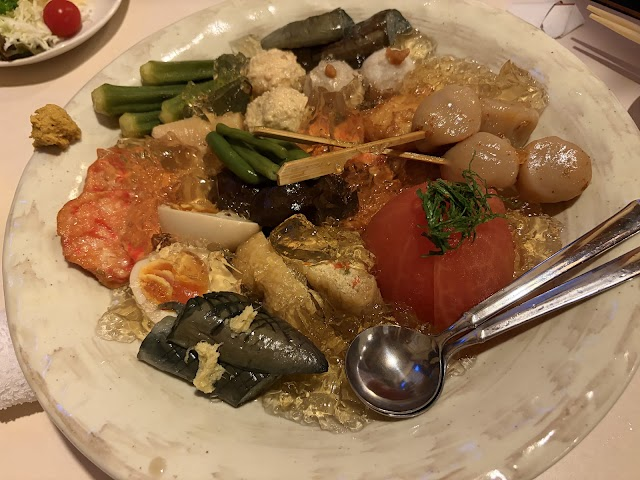
| 営業時間 | 月・火・水・木・金・土 17:00〜22:00 |
|---|---|
| 定休日 | 日曜 |
| 住所 | 福島県福島市宮町６−１５ |
| 予約 | 可 — ☎ 024-522-5256 |
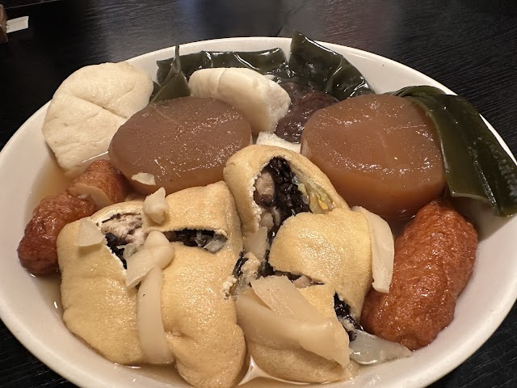
| 営業時間 | 月・火・水・木・金・土 17:30〜22:30 |
|---|---|
| 定休日 | 日曜 |
| 住所 | 福島県福島市新町１−２ |
| 予約 | 可 — ☎ 024-522-3626 ／ 公式サイト |
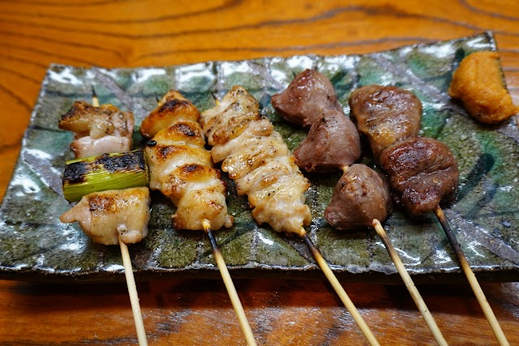
| 営業時間 | 月・水・木・金・土・日 17:00〜23:00 |
|---|---|
| 定休日 | 火曜 |
| 住所 | 福島県福島市置賜町５−１８ |
| 予約 | 可 — ☎ 024-529-5725 ／ 公式サイト |
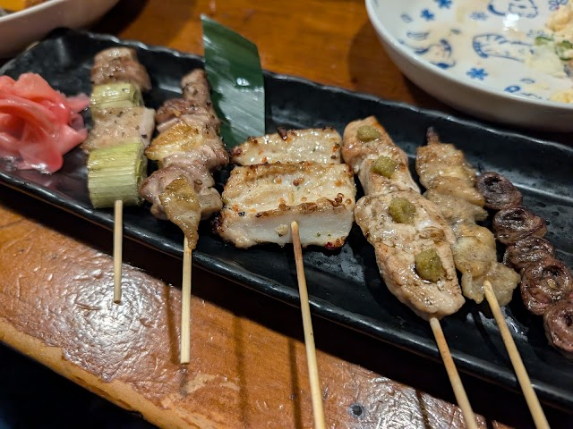
| 営業時間 | 月・火・水・木・金・土 17:00〜1:00 ／ 日 17:00〜0:00 |
|---|---|
| 定休日 | なし(要最終確認) |
| 住所 | 福島県福島市置賜町５−３１ |
| 予約 | 可 — ☎ 090-9636-4414 ／ 公式サイト |
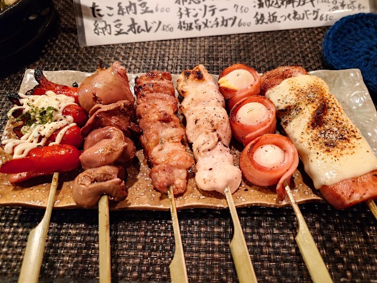
| 営業時間 | 月・火・水・木・金・土 18:00〜0:00 |
|---|---|
| 定休日 | 日曜 |
| 住所 | 福島県福島市万世町１−３４ 2F |
| 予約 | 可 — 公式サイト |
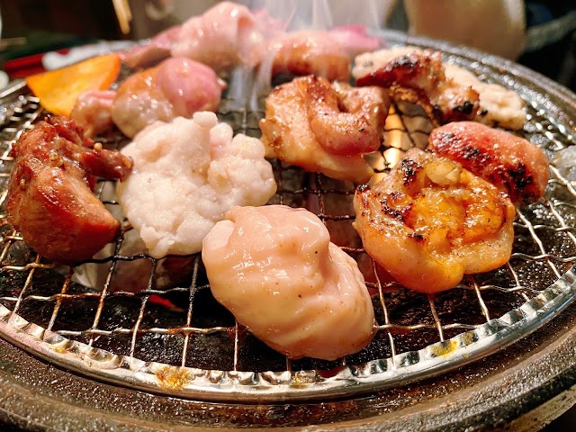
| 営業時間 | 月・火・水・木・金・土 17:00〜23:00 ／ 日 17:00〜22:00 |
|---|---|
| 定休日 | なし(要最終確認) |
| 住所 | 福島県福島市置賜町４−１ |
| 予約 | 可 — ☎ 024-522-7707 ／ 公式サイト |
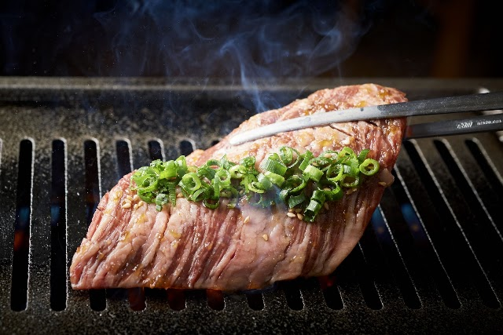
| 営業時間 | 火・水・木・金・土・日 11:00〜14:00, 17:00〜21:00 |
|---|---|
| 定休日 | 月曜 |
| 住所 | 字垳-7-10 大森 福島市 福島県 960-1101 日本 |
| 予約 | 可 — ☎ 024-573-0310 ／ 公式サイト |
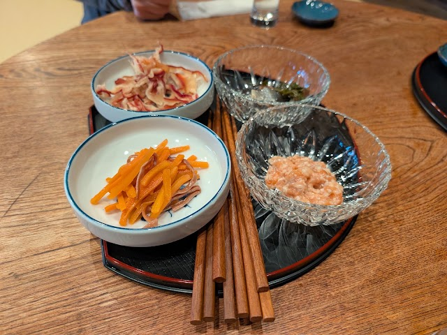
| 営業時間 | 13:00〜18:00(金・土・日のみ営業) |
|---|---|
| 定休日 | 月〜木曜 |
| 住所 | 福島県福島市飯坂町湯沢９−２ |
| 予約 | 要確認 — ☎ 090-4346-0965 ／ 公式サイト |
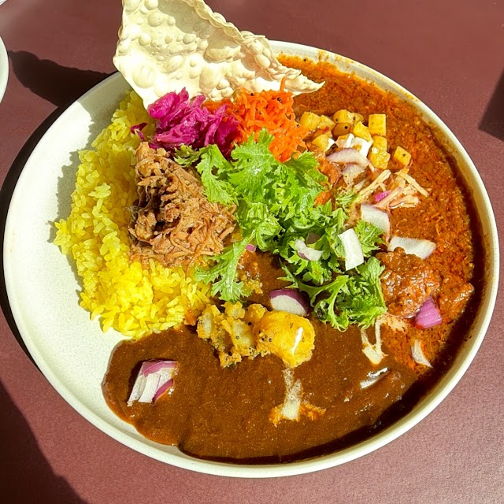
| 営業時間 | 火・水・木・金・土・日 11:00〜16:30 |
|---|---|
| 定休日 | 月曜 |
| 住所 | 福島県福島市森合西養山１ |
| 予約 | 可 — ☎ 050-8888-1947 ／ 公式サイト |
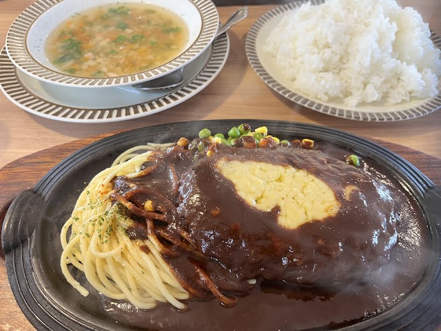
| 営業時間 | 月・火・水・木・土 11:00〜13:00, 17:00〜17:50 |
|---|---|
| 定休日 | 金・日曜 |
| 住所 | 福島県福島市飯坂町平野原７８−７８ レストランリンカーン |
| 予約 | 可 — ☎ 024-542-8209 ／ 公式サイト |
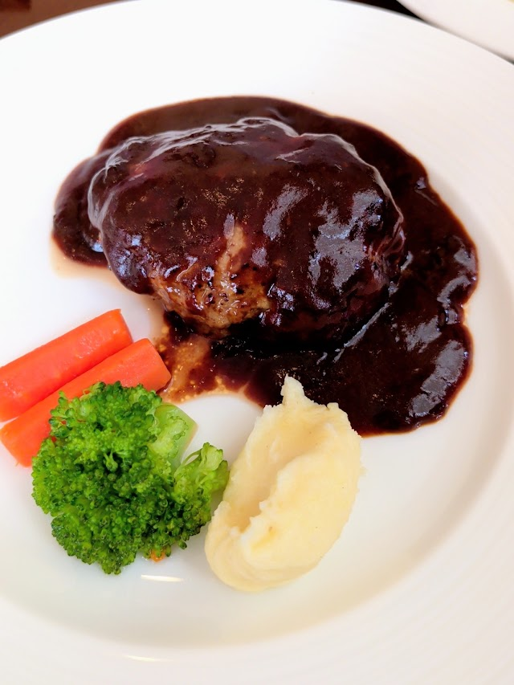
| 営業時間 | 月・木・金・土・日 11:30〜14:00, 17:30〜20:30 ／ 火 11:30〜14:00 |
|---|---|
| 定休日 | 水曜 |
| 住所 | 福島県福島市黒岩戸ノ内７ |
| 予約 | 可 — ☎ 024-539-5066 ／ 公式サイト |
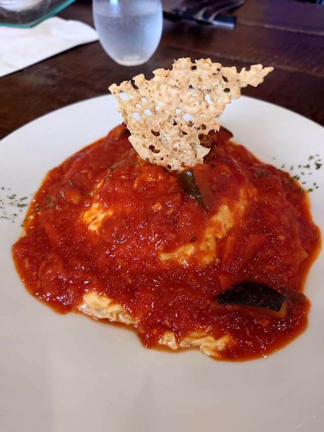
| 営業時間 | 月・火・水・金・土・日 11:00〜14:00 |
|---|---|
| 定休日 | 木曜 |
| 住所 | 福島県福島市荒井横塚３−１１６ 3番地116 |
| 予約 | 可 — ☎ 050-8885-3023 ／ 公式サイト |
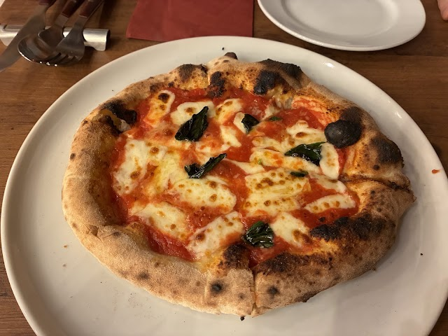
| 営業時間 | 月・火・水・金・土・日 11:30〜14:00, 17:30〜21:30 |
|---|---|
| 定休日 | 木曜 |
| 住所 | 福島県福島市飯坂町湯町３ |
| 予約 | 可 — ☎ 024-542-3791 ／ 公式サイト |
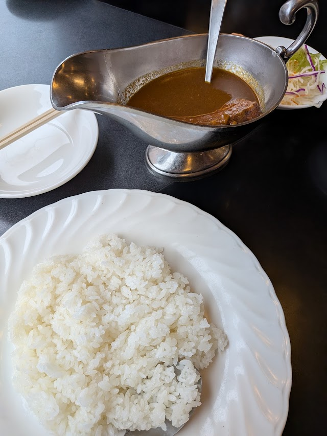
| 営業時間 | 火・水・木・金・土・日 11:00〜13:45, 17:00〜19:45 |
|---|---|
| 定休日 | 月曜 |
| 住所 | 福島県福島市北町２−１ |
| 予約 | 可 — ☎ 024-522-4379 |
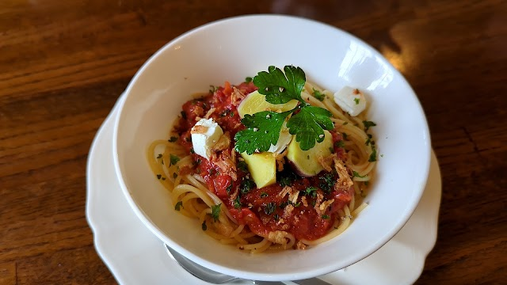
| 営業時間 | 月・火・金・土・日 10:00〜16:00 |
|---|---|
| 定休日 | 水・木曜 |
| 住所 | 福島県福島市清水町北谷地１６−１ コーヒー＆レストラン風の谷 |
| 予約 | 可 — ☎ 024-548-0786 |
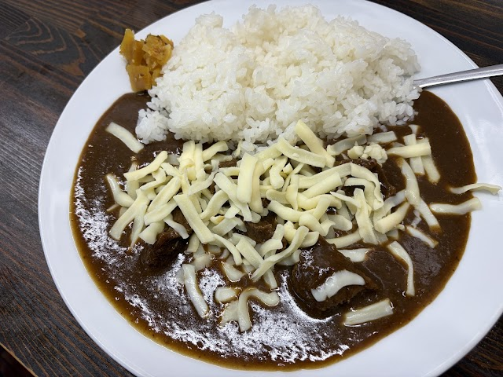
| 営業時間 | 火・木 11:00〜14:00 ／ 水・金・土・日 11:00〜14:00, 17:30〜20:00 |
|---|---|
| 定休日 | 月曜 |
| 住所 | 福島県福島市仲間町８−１４ |
| 予約 | 要確認 — ☎ 080-1394-6978 ／ 公式サイト |
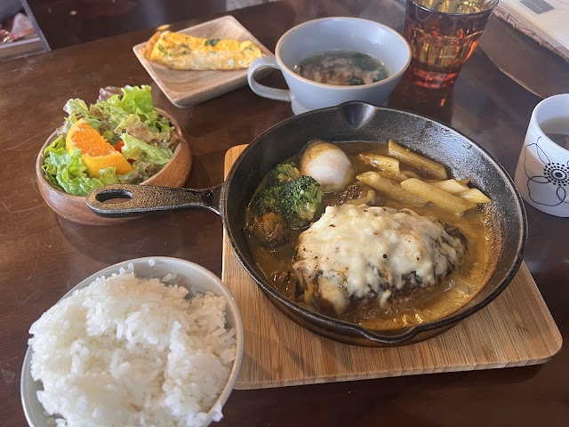
| 営業時間 | 月・火・水・木・土・日 11:00〜15:00 ／ 金 11:00〜15:00, 17:00〜20:00 |
|---|---|
| 定休日 | なし(要最終確認) |
| 住所 | 福島県福島市町庭坂清水37 |
| 予約 | 可 — ☎ 090-6224-0969 ／ 公式サイト |
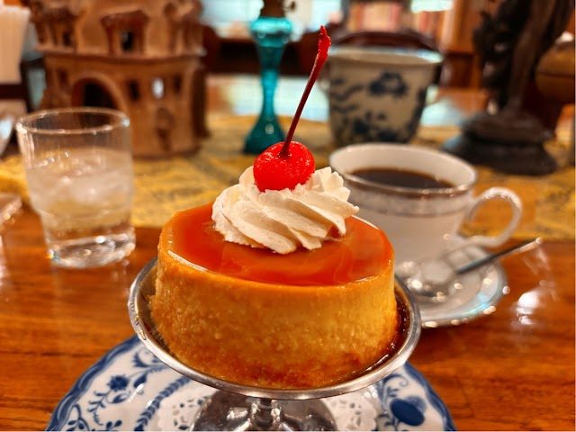
| 営業時間 | 月・火・水・木・日 11:00〜20:30 ／ 金・土 11:00〜21:30 |
|---|---|
| 定休日 | なし(要最終確認) |
| 住所 | 福島県福島市栄町７−３３ 錦ビル ２F |
| 予約 | 要確認 — ☎ 024-523-4035 ／ 公式サイト |
| 営業時間 | 火・水・木・金・土・日 10:00〜18:00 |
|---|---|
| 定休日 | 月曜 |
| 住所 | 福島県福島市大町８−１７ |
| 予約 | 要確認 — ☎ 024-522-4429 |
| 営業時間 | 火・水・木・金 11:00〜19:00 ／ 土 11:00〜18:00 |
|---|---|
| 定休日 | 月・日曜 |
| 住所 | 福島県福島市上町５−６ 上町テラス 1F |
| 予約 | 要確認 — ☎ 024-563-6558 ／ 公式サイト |
| 営業時間 | 月・火・木・金・土・日 8:30〜17:30 |
|---|---|
| 定休日 | 水曜 |
| 住所 | 福島県福島市飯坂町立町８−８ |
| 予約 | 要確認 — ☎ 024-542-2427 ／ 公式サイト |
| 営業時間 | 月・火・水・木・金・土 10:00〜22:00 |
|---|---|
| 定休日 | 日曜 |
| 住所 | 福島県福島市置賜町４−１３ |
| 予約 | 要確認 — ☎ 024-522-5092 ／ 公式サイト |
| 営業時間 | 月・火・木・金・土・日 9:00〜18:30 |
|---|---|
| 定休日 | 水曜 |
| 住所 | 福島県福島市南沢又柳清水１９−１６ |
| 予約 | 要確認 — ☎ 050-5266-0515 ／ 公式サイト |
| 営業時間 | 月・火・水・金・土・日 8:00〜17:00 |
|---|---|
| 定休日 | 木曜 |
| 住所 | 福島県福島市笹谷佐場野古屋１２ 種子屋笹谷工場 |
| 予約 | 要確認 — ☎ 024-557-8343 |
| 営業時間 | 月・火・金・土 11:00〜17:00 ／ 日 11:00〜16:00 |
|---|---|
| 定休日 | 水・木曜 |
| 住所 | 福島県福島市土湯温泉町堤ヶ平 茂田 1 |
| 予約 | 要確認 — ☎ 024-595-2515 ／ 公式サイト |
| 営業時間 | 水・木・金・土・日 10:30〜18:00 |
|---|---|
| 定休日 | 月・火曜 |
| 住所 | 福島県福島市山居７０−４ |
| 予約 | 要確認 — ☎ 024-535-8223 ／ 公式サイト |
本ガイドは個人利用目的で作成。掲載情報は2026年8月時点の調査に基づく。写真出典: Google Maps投稿写真(©各投稿者/Google)。